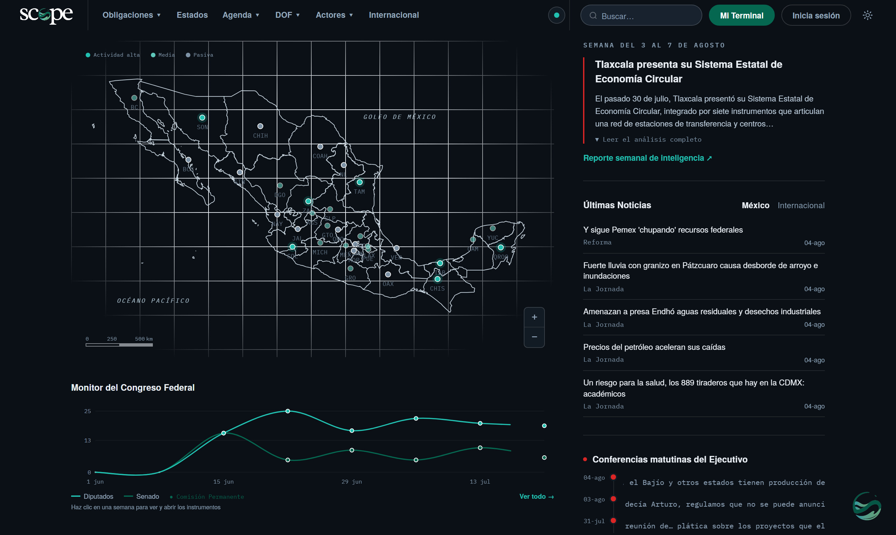

La inteligencia regulatoria ambiental de México, en un solo lugar.
Preview para el Consejo de GEMI · 2026
Desliza para comenzar ↓
De dónde venimos
Primero fue nuestro trabajo.
Durante años, GEMI ha producido reportes de inteligencia y seguimiento regulatorio. Tras meses de reflexión, lo llevamos a la incubadora y lo construimos en nuestro laboratorio de datos: ampliar esa base y compartirla con socios y nuevos actores, en un sistema fácil de usar.
Reportes de inteligencia
Seguimiento regulatorio
Scope
El reto
La agenda ambiental no vive en un solo lugar.
Vive en 32 congresos estatales, en el Diario Oficial de cada mañana, en cientos de Normas Oficiales Mexicanas, en los tribunales, en la conferencia matutina y en la prensa. Cambia todos los días. Ninguna empresa alcanza a leerla completa.
La reunimos toda. La volvimos legible. La pusimos viva.
Panorama nacional
32 entidades. Una sola pantalla.
Un panorama que se ilumina donde sube la actividad regulatoria y la presencia en medios. Un toque y entras al expediente completo de cada estado.
Radar temático
Cada sector tiene su señal.
El Radar cruza prensa, DOF, Congreso y NOMs por tema, y te dice dónde sube la presión, con los datos duros del sector detrás.
Poder Legislativo
Seguimos todo el Congreso de México.
La Cámara de Diputados y el Senado, semana a semana: iniciativas, puntos de acuerdo y exhortos ambientales, con la ley que se reforma y quién la propone. Y monitoreamos los 32 congresos estatales, donde también se legisla lo ambiental.
Monitor del Congreso Federal
Actividad ambiental · últimas 8 semanas
DiputadosSenado
Comparar entidades
¿Qué estado te cuesta más?
Cada ley expresa su impuesto en unidades distintas: unas en UMA, otras en pesos. Scope las normaliza a pesos y las compara lado a lado. Una decisión de operación, resuelta en segundos.
Impuesto al carbono · por tonelada de CO₂e
Normalizado a MXN · UMA 2026 = $117.31
Cada estado, un expediente
No es un directorio. Es profundidad.
Leyes vigentes con fecha y estatus, impuestos verdes, materiales regulados y la prensa de cada entidad, con el documento oficial. El expediente que un despacho tardaría semanas en armar.
Ciudad de México presenta una complejidad regulatoria ambiental alta, con cobertura en 5 materias ambientales. Su régimen de impuestos ambientales es en desarrollo. La capital Ciudad de México concentra la actividad legislativa del congreso estatal.
El gabinete federal con su directorio real (nombre, cargo y correo). Y el Congreso, triturado: buscas por comisión o por legislador y Scope te dice si la comisión ya sesionó y qué trae en agenda.
Por comisiónPor legislador
Medio Ambiente, Recursos Naturales y Cambio Climático
Senado de la República
Sesionó · 12 ago 2026
3 iniciativas · 2 dictámenes en agenda
Recursos Hídricos e Infraestructura Hidráulica
Senado de la República
Sin sesión esta semana
Lo que se decide afuera, también te alcanza.
Dos señales externas que mueven la regulación de México: los instrumentos internacionales que alcanzan al exportador, y el pulso político de cada mañana.
Conferencia matutina · Presidencia
El pulso político, cada mañana
Seguimos la agenda de la conferencia de Claudia Sheinbaum, donde la rentabilidad política marca el rumbo de lo ambiental en México.
Instrumentos internacionales · base viva de Scope
Mi Terminal
Y luego, la haces tuya.
Elige temas, estados y NOMs; Scope calcula tu señal del día, tu autoevaluación de cumplimiento y tu reporte técnico en PDF. Míralo construirse.
Arma tu terminal
Selecciona lo que te importa
TEMAS
ResiduosAguaEconomía circularCambio climático
ESTADOS
Ciudad de MéxicoJaliscoNuevo LeónPuebla
REFERENCIAS
NOM-161NOM-083
TU SEÑAL · LISTA
Agua y Residuos concentran tu señal
38 menciones en medios · últimos 7 días
Diseñada para tu terminal de trabajo
Pensada para la pantalla grande.
Scope vive donde se toman las decisiones: en la terminal de trabajo. Cada expediente, cada radar y cada comparación aprovechan el monitor completo, sin recortes.
La versión para smartphone llega en la siguiente fase

Lo que viene
Siguiente fase
Esto apenas empieza.
Asistente Signal Próximamente
Pregúntale por tus NOMs, impuestos o normativa y responde con los datos de tu terminal.
Lectura municipal Próximamente
Ampliación de fuentes al nivel municipal, para bajar la señal a donde opera cada planta.
App para smartphone Próximamente
La experiencia de Scope, también en el teléfono, para consultarla fuera de la terminal.
¿Qué estado cobra más por tonelada de CO₂e?
Signal Próximamente
Coahuila, con $528 por tonelada: el impuesto al carbono más alto del país, seguido de Nuevo León ($327). ¿Te preparo el comparativo completo?
Cómo se nutre
No es una foto. Es una señal que respira.
Detrás corre maquinaria todos los días: lectores automáticos de prensa nacional y estatal, del DOF, del Congreso, de CONAMER y de la conferencia matutina; e ingesta de datos abiertos oficiales de SEMARNAT e INECC, más bases legales curadas por GEMI. Todo con fuente. Todo fechado.
0+ fuentes
Prensa, DOF, Congreso, CONAMER, gacetas y datos oficiales
24/7
Un GEMI que no descansa: la señal se actualiza sola, de día y de noche
0 estados
Cobertura nacional, no solo federal
Lo que hay debajo
32 años de experiencia detrás de 6 meses de construcción.
32 años
De experiencia de GEMI con el sector y las autoridades
~6 meses
En el laboratorio de datos, de la idea al producto vivo
1 plataforma
Donde ese conocimiento se vuelve producto
Para quién
Para quien vive de anticiparse.
Anticipar.Comparar.Cuantificar.Cumplir.
Direcciones de sostenibilidad, asuntos regulatorios y jurídicos: lo que antes eran semanas de despacho, aquí es una pantalla.
El motor y el futuro
Detrás de Scope está GEMI.
La jurisprudencia, el monitoreo internacional y el conocimiento de sus asociados. Scope es donde ese trabajo, que antes vivía en reportes, se vuelve producto vivo, listo para compartirse con socios y nuevos actores.
Un GEMI 24/7
El conocimiento del equipo, ahora encendido de día y de noche, sin pausas.
Una consola por asociado
Cada empresa de GEMI, su propio radar y su expediente sectorial.
Inteligencia, no listas
Del dato oficial a la lectura que un director usa el mismo día.
El estándar del sector
El lugar donde México lee su propia regulación ambiental.
Acceso
Un precio para cada ritmo.
Mensual
$1,699
por usuario · al mes
Trimestral
$4,099
por usuario · cada 3 meses
Mejor valor
Anual
$17,999
por usuario · al año
Dos meses sin costo
Los socios de GEMI ya están dentro.
Cada socio recibe 3 usuarios: dos para los socios registrados y uno extra para probarlo sin costo. A partir del cuarto usuario, se suman $1,000 a la membresía por cada uno, solo por los meses en que se use.
El retorno para GEMI
Veinte usuarios sostienen una cuota.
Con la suscripción mensual ($1,699 por usuario), esto es lo que Scope aporta a GEMI en un año, según cuántos usuarios sostenga.
Ingreso anual estimado · plan mensual
Con ~20 usuarios sostenidos durante un año, Scope aporta $407,760: la cuota anual de una empresa (~$400,000 MXN).
La operación
Lo que cuesta sostenerlo.
Hoy
Costo marginal
Scope corre sobre infraestructura de bajo costo: hosting estático y automatización que se actualiza sola. Por debajo de $1,000 MXN al mes.
Con 1,000 usuarios activos · estimación mensual
Total estimado$0 MXN
Alrededor de $20 por usuario al mes para operar, frente a un precio desde $1,699. El margen es lo que sostiene la reinversión en más datos e inteligencia.
Estimación de operación. Incluye bases de datos, almacenamiento, servicios de IA, ingesta y hosting. Los servicios de IA escalan con el uso del asistente.
El lanzamiento
Listos para octubre.
$20,000
Lanzamiento · inversión única
$30,000
Marketing, ya requerido hasta fin de año
$5,000 /mes
Mantenimiento hasta diciembre
Agosto
construcción
Septiembre
preparación
Octubre
primeros clientes
Diciembre
evaluación
Los primeros clientes pagados en octubre.
En el marco de la Semana por el Clima, el momento donde el sector mira hacia lo ambiental.